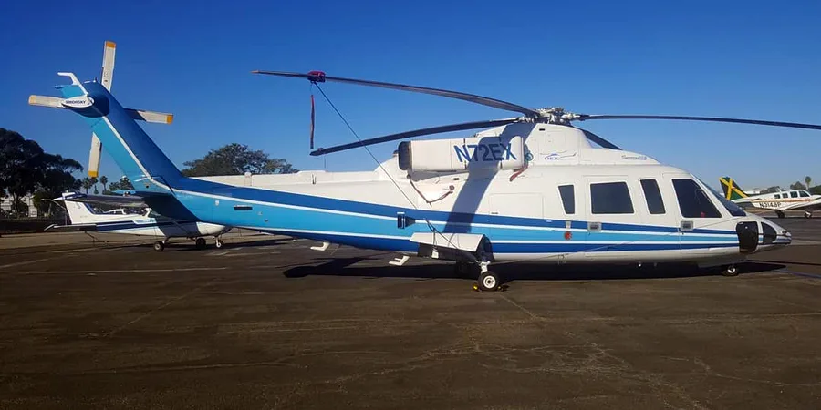

Sikorsky S-76B (N72EX)
Fatal accident near Calabasas, California January 26, 2020, 09:46 PST · hillside terrain near US-101, CalabasasSerious outcome
No survivors
Case summary
A charter helicopter flying former NBA player Kobe Bryant, his daughter Gianna, and six others to a youth basketball event continued under visual flight rules into clouds over hilly terrain near Calabasas. While attempting to climb above the layer, the helicopter entered a descending left turn and struck a hillside, killing all 9 aboard. The NTSB found the pilot became spatially disoriented after continuing into instrument conditions.

Twin-engine passenger helicopter
What happened
Source: NTSB Final Report (excerpt)At 0944:34, the pilot communicated on the SCT frequency that the flight was "gonna go ahead and start our climb to go above the, uh, layers, and, uh, we can stay with you here." The helicopter immediately began climbing at a rate of about 1,500 ft per minute and began a gradual left turn while remaining generally over US 101. About 0945:10, it started a left turn away from US 101 and reached its maximum altitude of about 2,370 ft msl (about 1,600 ft agl) about 0945:15 before it began to descend rapidly while remaining in the left turn. At 0945:17, the controller asked the pilot to "say intentions," and the pilot replied that the flight was climbing to 4,000 ft msl — no further communication was received. The last ADS‑B data point was recorded at 0945:36; the accident site was about 500 ft east of this point, at an elevation of about 1,100 ft msl in hilly terrain. A ground witness bicycling nearby, surrounded by mist, heard the helicopter for about 20 seconds before it emerged from the clouds rolling to the left; he saw it for 1–2 seconds before it struck the terrain and erupted into flames about 200 ft from his location.
Why it happened
Source: NTSB Final Report"The National Transportation Safety Board determines that the probable cause of this accident was the pilot's decision to continue flight under visual flight rules into instrument meteorological conditions, which resulted in the pilot's spatial disorientation and loss of control. Contributing to the accident was the pilot's likely self-induced pressure and the pilot's plan continuation bias, which adversely affected his decision-making, and Island Express Helicopters Inc.'s inadequate review and oversight of its safety management processes."
- Continued VFR flight into instrument meteorological conditions (IMC)
- Pilot's spatial disorientation following loss of outside visual reference
- Likely self-induced pressure to complete the flight
- Plan continuation bias ("get-there-itis")
- Operator's inadequate safety management oversight
Photos & media (3)
NTSB Airworthiness Group Factual Report, DCA20MA059At 0944:34, the pilot communicated on the SCT frequency that the flight was "gonna go ahead and start our climb to go above the, uh, layers, and, uh, we can stay with you here." The helicopter immediately began climbing at a rate of about 1,500 ft per minute and began a gradual left turn while remaining generally over US 101. About 0945:10, it started a left turn away from US 101 and reached its maximum altitude of about 2,370 ft msl (about 1,600 ft agl) about 0945:15 before it began to descend rapidly while remaining in the left turn. At 0945:17, the controller asked the pilot to "say intentions," and the pilot replied that the flight was climbing to 4,000 ft msl — no further communication was received. The last ADS‑B data point was recorded at 0945:36; the accident site was about 500 ft east of this point, at an elevation of about 1,100 ft msl in hilly terrain. A ground witness bicycling nearby, surrounded by mist, heard the helicopter for about 20 seconds before it emerged from the clouds rolling to the left; he saw it for 1–2 seconds before it struck the terrain and erupted into flames about 200 ft from his location.
"The National Transportation Safety Board determines that the probable cause of this accident was the pilot's decision to continue flight under visual flight rules into instrument meteorological conditions, which resulted in the pilot's spatial disorientation and loss of control. Contributing to the accident was the pilot's likely self-induced pressure and the pilot's plan continuation bias, which adversely affected his decision-making, and Island Express Helicopters Inc.'s inadequate review and oversight of its safety management processes."
- Continued VFR flight into instrument meteorological conditions (IMC)
- Pilot's spatial disorientation following loss of outside visual reference
- Likely self-induced pressure to complete the flight
- Plan continuation bias ("get-there-itis")
- Operator's inadequate safety management oversight